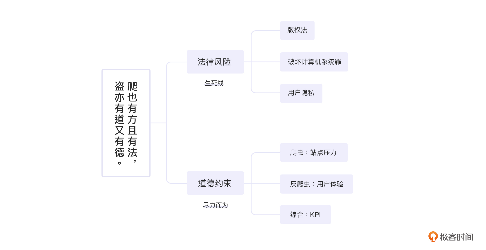

- 00 开篇词 如何突破“爬虫反爬虫”内卷之怪现状？.md.html
- 01 爬虫需求的诞生：我们是正经的软件工程师.md.html
- 02 爬虫的内卷和黑化：我们变得不正经啦.md.html
- 03 反爬虫的发展以及展望：我们也不是什么正经工程师.md.html
- 04 爬虫的首轮攻势：如何低调地拿到自己想要的数据？.md.html
- 05 反爬虫的应对之策：通用且基本的检测规则是什么？.md.html
- 06 爬虫攻势升级：分布式的意义在哪里？.md.html
- 07 反爬虫升级：如何判定你是个真人？.md.html
- 08 博弈的均衡：如何对抗道德的沦丧和人性的扭曲？.md.html
- 09 反爬虫概述（一）：高收益的后端能做哪些基本的事情？.md.html
- 10 反爬虫概述（二）：无收益的前端是怎么进行key处理的呢？.md.html
- 11 反爬虫概述（三）：前端反爬虫是怎么做信息收集的？.md.html
- 12 反爬虫概述（四）：前后端都不合适的时候如何进行处理？.md.html
- 13 反爬虫基础理论：这是唯一一节严肃的纯理论课.md.html
- 14 低耦合：如何快速下线反爬虫系统？.md.html
- 15 规则引擎：如何快速响应突发的爬虫需求？.md.html
- 16 验证爬虫：我到底要不要百分百投入？.md.html
- 17 招聘篇：如何写一个合适的JD？.md.html
- 18 如何搞定老板（上）：如何编造虚无缥缈的OKR？.md.html
- 19 如何搞定老板（中）：如何组建团队.md.html
- 20 如何搞定老板（下）：团队考核怎么做？.md.html
- 加餐 反爬虫的专家级鉴别力：用户习惯检测.md.html
- 春节加餐01 破解还是不破解，这是一个问题.md.html
- 春节加餐02 真实世界里，小心屠龙勇士变恶龙.md.html
- 春节加餐03 低调驶得万年船.md.html
- 答疑课堂 爬虫反爬虫调试对抗技巧以及虚拟机详解.md.html
- 结束语 达到理想不太易.md.html
- 捐赠
08 博弈的均衡：如何对抗道德的沦丧和人性的扭曲？
你好，我是DS Hunter。
前面我们讲了大量的擦边球，在04~07讲提到的反爬与爬虫的对抗中，你一定也体会到了，爬虫和反爬，的确是一个很腐蚀人心智的行当。但是，在这个行当里，无论是为了生存，还是为了赚钱，都一定要牢记：我们首先要做一个好人，然后才要考虑赚钱。因此，法律和道德是我们逃不开的两件事，我们不得不仔细学习一下。
法律是道德的最低标准。但是呢，法律又有一定的滞后性。这就导致了我们做的一些事情，合乎道德的，与合乎法律的，未必是一个标准。所以我们分开两部分来讨论。
另外，我要说明一下，这一讲并不是法律教条以及道德指导，更多的还是指出我们可能碰到的法律条款以及道德约束。法律是生死线，是无条件执行的。道德呢，则更倾向于一种人生观，用于指导我们成为更好的人，而不是指导我们获取更好的业绩。当然，你也一定要相信，更好的人，总有机会取得更好的业绩。
因此，希望学习完这一讲的你，在选择指导自己工作项目的动作方向的时候，依然是“follow your heart”，而不是单纯的“follow the rules”。
法律风险
爬虫在法律上的风险主要体现在：版权法，破坏计算机系统罪以及用户隐私三样。我会和你聊聊法律约束的关键点以及常见的争议点。不过，这只是为了帮助你走上正确的道路，可不要理解错了。最后，我也会根据自身的经验给你一些建议，看看作为反爬虫方或者爬虫方，你都能做些什么。
此外，需要注意的一点是，我毕竟不是专业的法律人士，这里讲述的，都是我们平时与法务合作得出的经验。如果要使用的时候，我的说法与你们法务的说法发生了冲突，请一定以法务的为准，不要以我的为准。毕竟法律是一门严肃的学科，在不同场景下可能有不同的解读。
版权法
极为常见的反制措施——版权法，其实是早年针对爬虫的最大杀器。但是针对价格爬虫，这个方法几乎无效，因为价格没有版权可言。版权法主要保护的是文字相关的信息，例如评论，你可以在网上找到点评相关的案子，这里我也主要用文字类的情境给你举例。
客观，是法律的一大要素。法律主要讲究证据，你必须有足够的证据，证明他抓了你的数据。而版权法还有个特别的地方，你还得证明他用你的信息牟利了，而不是自己在家里没事看着玩。举个例子，你现在在听我的反爬虫教程，这是我授权极客时间的内容。所以你在极客时间听到，是毫无问题的。不管你是单独购买，还是通过超级会员来看，都是合法使用的。但是，如果你过两天发现在另一个站点也可以看这门课程，那么在没有新的授权的情况下，他就侵犯了版权法。
时间角度上来看的话，爬虫一定是比人工快很多的。这里发散思考一下：文字类情境下触犯版权法，一定是通过爬虫来实现的吗？
间接获取数据，或者说非技术手段获取数据，可能比直接获取数据成本更低，比如众包。可能他是自己比较勤奋，一篇一篇地复制粘贴过去，或者他雇佣了一个实习生，用比较低的价格，人肉搬运过去的。我们有很多低成本的人工搬运办法。冷知识：很多爬虫的成本，甚至超过了人工。
专业角度来解释的话，这个操作明显是不属于爬虫的。但是，他违法吗？依然是违法的。因为版权法并不在乎你是用什么手段把东西拿走的。违法是违在了，拿走这个动作，而不是拿走的方式。
用了什么技术，并不是定罪的关键所在。使用爬虫，与不使用爬虫，只要最终拿走了别人有版权的信息，都是违法的。这就是这次发散思考想告诉你的一件事。有些人总会说：爬虫无罪。这么说也是没什么问题的。因为有罪的不是爬虫，而是侵权，是偷窃。
在我们能保证自己不去侵权、去偷窃的情况下，又怎么在竞对这么做的时候保护自己呢？毕竟，法律归法律，还是有很多人铤而走险的。因此我们也不能光喊着竞对违法，要想使用法律武器，首先要学会法律。既然知道了法律是一个讲证据的行业，那么你在平时就要留好证据。不然，回头上了法庭，都不知道有什么证据能证明对方。
这里你的疑问可能是：有什么办法证明他爬的是我的数据吗？毕竟文字类的东西我不可能获得用户授权书，万一他两边都写了相同的文字呢？嗯，但是你在给竞对数据的时候也可以做一些操作啊。
举个例子，假设有人抓去了这篇文章的这一段，我们有办法证明他侵犯的是我们的版权吗？抛开正规的版权申请这些高成本方式不谈，你有没有发现，关于版权法这一段，每一小段开头的第一个字凑在一起刚好是“极客时间专用？读起来并没有什么违和感，但是我不说，是不是你也不一定注意得到？所以，文字是最容易隐藏陷阱的，甚至比直接改一个价格更容易。
破坏计算机系统罪
破坏计算机系统罪的历史不算短，但是把爬虫认定为破坏计算机系统，就是近些年的事情了。
从本质上说，“破解反爬虫系统“被认定为“破坏计算机系统”，是没有什么悬念的。但是问题在于，爬虫对此是否知情。这里会存在多种争议。
比如说，你作为反爬虫方写了一段加密，给请求参数做校验，而对面压根没有读懂你的代码。但是凑着凑着，唉，神奇般的怎么就跑通了呢，然后就开始源源不断地拉取数据。
回头对峙起来，爬虫方说：我哪知道那是加密啊，我还以为那是什么我没见过的压缩方式呢，我实力一般水平有限，只能瞎蒙，我还以为终于猜对了呢，你这不是陷害我吗！再说，就你刚才描述的那种加密方式，这也叫加密啊，别给技术人员丢脸了。这个双方律师一定会有争议的。
另外一点就是：如果爬虫定义为破坏计算机系统罪，那么反爬虫方的法务优势也过大了一点。他完全可以先公开，然后让你爬着爬着，哪一天忽然来个加密，反手就起诉你破坏计算机系统。这岂不是成了一个口袋罪，与寻衅滋事站在了同一个位置上。
这里我要说的是，法律是用来保护自己的，而不是用来陷害别人的。所以也许哪一天会出个司法解释：慎用破坏计算机系统罪解释爬虫行为。这个行业过于魔幻，虽然我这是一个无责任的预言，但是还真不排除这种可能性。
那么面对上面说的两个争议点，爬虫和反爬双方能做些什么呢？
爬虫：时刻监测对方站点公开程度，避免忽然被陷害为破解计算机系统罪。此外，尽可能隐藏自己，不给对方留下任何证据。
反爬虫：精准调整反爬虫措施，避免给对方律师反驳的理由。此外，尽可能精准定位对方，并找出合法的证据，避免无证据可用，有法不能依。
用户隐私
用户隐私也是近期才立法的。如果说，破坏计算机系统罪还有一定的争议，那么用户隐私爬虫则完全不值得同情。
相信大部分的人都有过用户隐私被泄露的痛苦，动不动一个电话过来：
- “你好，请问需要提升下学历吗？哦你北大毕业啊，那没问题了。”
- “请问小额贷款需要吗？什么你很有钱？那……那你需要投资理财吗？”
骚扰还是其次，更严重的还会引发人身危险。因此，国家对于用户隐私泄露制定了非常严格的法规。爬虫抓取别的数据，可能还有一定的争辩意义。如果抓取用户隐私，那么基本上是直接Game Over。
因此，当你的需求是抓取用户信息的时候，请不要和产品经理客气，直接拒绝即可。这值得你主动放弃岗位。
道德约束
道德约束相对法律风险就麻烦了很多。当然道德问题容易存在争议，为了避免被抬杠，我也不细致分析应该怎么做，每个人都可以有自己的选择。
如果真的从纯道德角度来说，这个世界甚至不应该有爬虫。即使是搜索引擎，最开始也是在道德的灰色地带起来的。而商场如战场，大部分的人在思考问题的时候，往往权重最低的因素就是道德因素了。当然我知道，肯定有一些人会指责这段描述：“我怎么就把它当权重最低的因素了？”不过我打赌，他们转头又会在商场赚得盆满钵满。
你看，我们要做道德的人，又不能沦落为圣母（这个词居然现在成了贬义词，真的有点痛心），的确是一个很难的事情。我们只能像踩着钢丝一样走下去。而且大部分情况下，我们能保证不违法就已经竭尽全力了，能否再保证道德，完全是看个人的选择了。这没什么可指责的。
爬虫：站点压力
对于爬虫方来说，最大的职业道德莫过于降低对方站点压力。
原因很简单，如果你能抓1000条数据，你的老板一定会给你定2000条数据的KPI，或者OKR。无论哪一种方式，你都不得不多抓一些数据，哪怕伤害自己也在所不惜。但是这违反了我们的“低调原则”。爬虫和反爬，应该走向一个双赢的结局，而不应该是双输。因为内卷不创造价值，本身已经很输了，再往输了走，就更加残酷了。
至于降低压力的办法也有很多，基本上你自己架构网站的时候有多少种办法降低压力，那你就有多少种办法降低对方压力。最简单的，架构有削峰填谷，那你抓取就要均匀，避免造成突发压力。此外，在讲低调的时候，不断地提到数据规划的重要性，也是为了这个目的：降低站点压力。
反爬：用户体验
反爬虫方千万不要以为道德与自己无关。实际上，反爬虫方对爬虫可以残忍， 但是一定要注意：对用户不能残忍。
反爬的办法有很多，你一定能找到很多高准确率但是也高误伤率的办法，但是使用这些办法也一定要慎重。要知道，爬虫杀了一波还会再来一波，但是用户对你们的信任，杀过一次，就很可能再也不会存在了。这也就是前一讲不断强调我喜欢滑块的原因：并不是滑块有多优秀，而是与它竞争的都太烂了。
综合：KPI
KPI，说是道德，但是也不道德。这就是道德的悖论。
总体来说，反爬虫方要给爬虫一口饭吃，在拦截它的同时，也放一部分进来。这样既能麻痹对方，又能让对方活下去，避免人家背水一战和你拼命。同时，爬虫方如果能低调地抓取到数据了，那么最好也额外撞一下反爬虫，有意让他抓一点，免得他年底评3.25。万一他被裁员了，换个人来防你，你确定不会拦得更凶吗？所以说，适当假装被抓，就可以皆大欢喜，老板开心，程序员也开心。
说这样不道德的原因是，这样做本质上就是达成一致、心照不宣一起骗老板。虽然老板的需求本身就不道德，有点以毒攻毒的感觉了。但是并不能因为接了不好的任务，就用不好的方式来欺骗他。这样说其实也有点过于圣母的倾向了，但是如果站纯中立角度来考虑问题，也只能这么看。
小结
又到了结束时间，这里我们总结下，爬虫的主要法务风险在于版权法、破坏计算机系统罪以及用户隐私。三者是递进关系，越往后越严重。法务风险是生死线，是绝对没有商量的余地的。
而道德层次，则稍稍宽松一些，或者说仁者见仁智者见智一些。爬虫方主要在于不要给对方太大的压力，这个压力就是指服务器压力。反爬方也不要给对方太大压力，指的主要是考评。综合下来，双方都要为对方KPI着想，虽然是对手，毕竟是同行。

那么，截止到目前，博弈的基本方式以及如何在博弈中找到平衡点，都已经很清晰了。在接下来的09讲到12讲，我们就一起聚焦到博弈的具体方法上，专注于反爬虫的技术细节。希望我的经验可以帮助你赢得这场战争。
思考题
又到了愉快的思考题时间！
由于法务知识的特殊性，这些思考题我自己也很纠结，所以这次的思考题就相当于共同讨论吧。你可以任选一个，在留言区和我一起讨论。想知道具体答案，还是要咨询专业人士。再次强调，法律是一门严肃的学科！
- 假设反爬虫方拿爬虫方没办法，一怒之下在数据里偷偷掺了点用户信息，爬虫方摇身一变成了抓取用户信息了。请问双方在法律上分别处于什么状态？
- 假设最后开庭，爬虫方拿出证据证明自己抓的一直不是用户隐私，那么这个可以做为证据继续起诉爬虫破坏计算机系统罪吗？
- 爬虫方发现用户隐私后，立刻起诉对方泄露用户隐私，有可能成功吗？
期待你在评论区的分享，我会及时回复你。反爬无定式，我们一起探索。
© 2019 - 2023 Liangliang Lee. Powered by gin and hexo-theme-book.